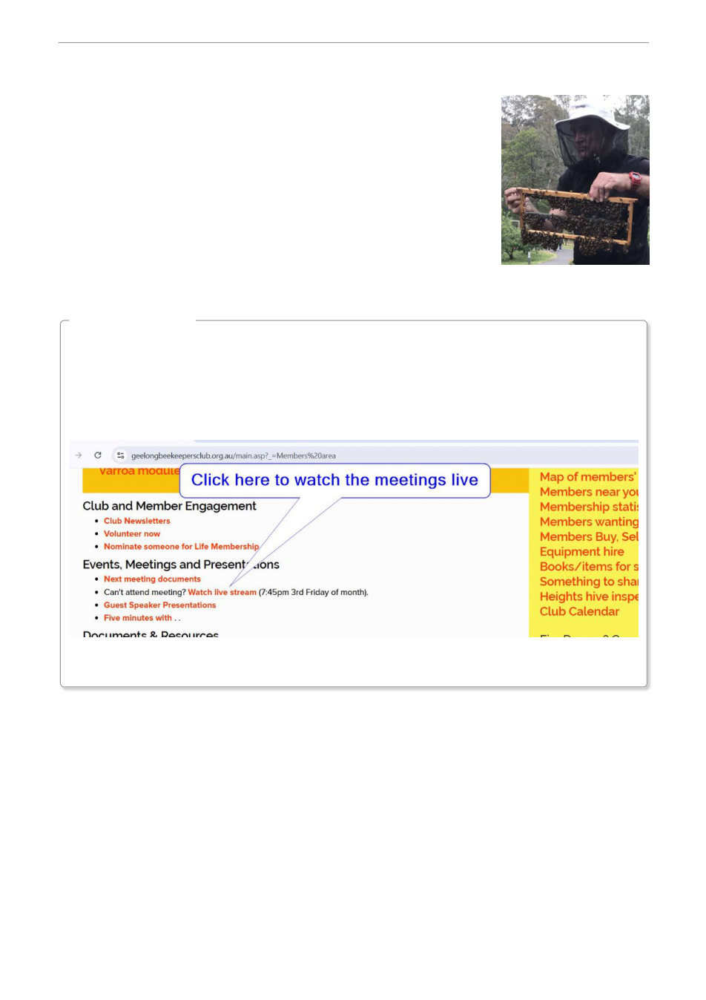

Next Meeting Information
NEXT MEETING
13 September 2026 - Coffee with a Keeper - Cafe Zoo, Drysdale -
Volunteer Required
18 September 2026 - Guest speaker - Andrew Wooten (Master
beekeeper, VAA Vice President) on "Measuring and modelling mites,
including the new Bawden Assay". Andrew Wootton started keeping
bees as a child in the UK, long before varroa arrived there. He is a
certified Master Beekeeper with the Eastern Apicultural Society of North
America and has run numerous beginners' courses and queen-raising
workshops. He is Vice-President of the Victorian Apiarists' Association,
Chair of its Education Committee and runs the regular livestream, HiveMeet.
DID YOU KNOW . . .
We want you to attend the monthly meeting in person,
but . .
if you are unable to attend the monthly meeting in person, you can watch the
meeting live online (login to the Members Area and click the Watch live stream
link under the Events, Meetings and Presentations heading.)
or, you can view recordings of the presentations after the meetings in the Guest
Speaker Presentations page.
IMPORTANT DATES
3 October 2026 - Geelong Botanic Gardens display
15-18 October 2026 - Geelong Show - Volunteers required
16 October 2026 - Guest speaker Bernie Franke "A small sideline operation in southern Victoria:
developing and evolving our varroa plan" / Launch of the Geelong Project.
24/25 October 2026 - Festival Francais, The Height, Newtown - Volunteers required
20 November 2026 - Guest Speaker Michael Johnson from The Basin Backyard. We’re welcoming
back Michael Johnson, who’ll take us through the highs, lows, of his last year in the beekeeping
world.
He’ll also be presenting The Varroa Controller, a clever heat‑treatment system for capped brood
that’s been generating plenty of interest.